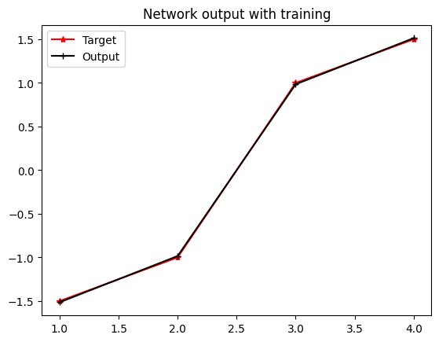

Building A Feedforward Neural Network
The goal of this exercise is to build a simple Feedforward Neural Network in Python from scratch, without relying on existing frameworks like Keras or TensorFlow to gain a better understanding of the underlying mechanism of neural networks. This involves manually implementing forward propagation, activation functions, loss calculations, and backpropagation for weight updates.
Theoretical Background
A Feedforward Neural Network (FNN) consists of layers of neurons, with each layer fully connected to the next one. Unlike other networks, FNNs do not have cycles or loops, and information flows only in one direction: from input to output. The simplest architecture consists of:
- Input Layer: Receives the input features.
- Hidden Layer(s): Processes inputs from the input layer.
- Output Layer: Produces the final prediction.
Mathematically, a simple feedforward network with inputs, outputs, and a hidden layer with neurons can be modeled as:
Where: - is the input vector for the -th sample. - is the weight matrix for the input and output layers. - is the bias vector for the hidden and output layers. - is the non-linear activation function (e.g., Tanh, ReLU) - is the predicted output vector for the -th sample.
The network learns by adjusting these weights and biases based on the error between the predicted output and the actual target :
The goal is to minimize this error across all samples by optimizing the weights and biases.
What is Mean Squared Error (MSE)?
The Mean Squared Error (MSE) is a common metric for measuring how well a model fits the data. It calculates the average squared difference between the predicted and actual values. It aggregates the errors across all samples to provide a single measure of the network's performance. It is the average of the squared differences between the predicted values and the actual target values. As the error rate increases, the MSE penalty grows quadratically, which heavily penalizes larger errors. A downside to MSE is that if applied to a dataset with a few outliers, it can heavily penalize the model. $$ \text{MSE} = \frac{1}{s} \sum_{t=1}^{s} \sum_{k=1}^{m} (y_k(t) - \hat{y}_k(t))^2 = \frac{1}{s} \sum_{t=1}^{s} \| \mathbf{E}(t) \|^2 $$ **Where:** - \( s \) is the total number of samples. - \( m \) is the number of output neurons or dimensions. - \( y_k(t) \) is the observed (actual) value for the \( k \)-th output in the \( t \)-th sample. - \( \hat{y}_k(t) \) is the predicted value for the \( k \)-th output in the \( t \)-th sample. - \( \mathbf{E}(t) \) is the error vector for the \( t \)-th sample, where each component \( e_k(t) = y_k(t) - \hat{y}_k(t) \). MSE is one of the most popular tools to measure how accurate models are within statistics and machine learning. Within ML, MSE is used as a loss function or part of a loss function that an algorithm minimizes.When training a neural network, our goal is to minimize the MSE, meaning we want our predictions to be as close as possible to the actual targets.
To minimize the MSE, we need to adjust the network's weights in the direction that reduces the error. This is achieved through backpropagation, which involves computing the gradient of the MSE with respect to each weight in the network.
Backpropagation can be done by following the four steps:
- Compute the gradient of MSE The gradient of the MSE with respect to each weight in the output layer is calculated to understand how changes in these weights affect the overall error. The formula for the gradient is:
Where: - : This scaling factor comes from the derivative of the squared error term and the averaging over all samples in the MSE. - : The error vector for the -th sample (). - is the output of the hidden layer. The superscript to denotes the 'transpose' of , and it ensures that the dimensions of the vectors or matrices involved in the multiplication are compatible. If is a column vector, its transpose becomes a row vector (or vice versa), allowing for correct multiplication with the error vector.
- Update the Output Layer Weights () Using the computed gradients, we update the weights for the output layer:
Here, is the learning rate, controlling the step size of each update.
- Compute the Gradient of MSE with Respect to Input Layer Weights ():
We then compute the gradients for the input layer weights, considering the backpropagated error from the output layer:
Here, is the derivative of the non-linear activation function with respect to the input of the hidden layer, and is the transpose of the input vector for the -th sample.
- Update the Input Layer Weights ():
Finally, the input layer weights are updated*:
*(For clarity, the equal sign = here is for assignment)
This process repeats for multiple epochs until the network converges to a state where the error is minimized.
The non-linear function we will use in this exercise is the hyperbolic tangent "Tanh":
Now that we’ve explored the mathematical foundations, let’s see how we can implement a feedforward neural network from scratch in Python. This will give us a deeper understanding of how the forward and backward passes work without the abstraction of higher-level libraries.
Setup
Creating the Neural Network in Python
We'll start by implementing the feedforward neural network using NumPy, a fundamental package for scientific computing in Python.
We use Numpy because (1) array is much more efficient than lists, and (2) we can easily define the activation function such as tanh(x) with the library.
import numpy as np
Let's define our input and target vectors:
import numpy as np
# Define input and target vectors
x = np.array([[-2, -1, 0, 1], # input 1
[-1, 0, 1, 2]]) # input 2
t = np.array([-1.5, -1, 1, 1.5]) # target
# Display the inputs and corresponding targets
print(f"This network has {x.shape[1]} inputs:")
for i in range(x.shape[1]):
print(f" [{x[0, i]}, {x[1, i]}] with target {t[i]}")
Output:
This network has 4 inputs:
[-2, -1] with target -1.5
[-1, 0] with target -1.0
[0, 1] with target 1.0
[1, 2] with target 1.5
Next, we'll initialize the network parameters. Feel free to try varying these values to test the influence in the algorithm.
wi1=0.0651 # first weight of the input layer
wi2=-0.6970 # second weight of the input layer
wo=-0.1342 # first weight of the output layer
bi=0 # input bias
bo=-0.5481 # output bias
q=500 # training epochs
a=0.01 # learning rate
It is always a good practice to visualize the data distribution by plotting the input values against the targets. If certain inputs are grouped closely and share similar characteristics, it might indicate redundancy in data. It also helps us eliminate any outliers we don't want to include in our training.
To plot the input and target vectors, we will use Matplotlib:
import matplotlib.pyplot as plt
i=np.arange(1,s+1) # x axis for plotting (1 to 4)
# Refer to matplotlib doc for plt functions: https://matplotlib.org/stable/tutorials/pyplot.html
plt.plot(i, t, 'r*-', label='Target') # red star marker solid line (r*-)
plt.plot(i,x[0],'bo-',label='Input 1') # blue circle marker solid line (bo-)
plt.plot(i,x[1],'bs-',label='Input 2') # blue square marker solid line (bs-)
plt.title('Training data')
plt.legend()
plt.show()

Experiments
Now it's time to propagate the input through the network.
First, we'll pass input data through each layer of the network, applying weights and bias at each neuron.
Recap of the figure:
# initialize temp variables for forward propagation
s = x.shape[1] # number of samples (data points, 4 here)
zini = np.zeros(s) # zin for each data point
zi = np.zeros(s) # zi for each data point
yi = np.zeros(s) # output without training
# forward propagation
for k in range(s):
x0_k = x[0, k] # kth data point of 1st input
x1_k = x[1, k] # kth data point of 2nd input
zini[k] = (wi1 * x0_k + wi2 * x1_k) + bi
Then, we'll transform the data using the activation function tanh and apply the output weight and bias to optain the final output.
# forward propagation
for k in range(s):
x0_k = x[0, k] # kth data point of 1st input
x1_k = x[1, k] # kth data point of 2nd input
zini[k] = (wi1 * x0_k + wi2 * x1_k) + bi
zi[k] = (2/(1+np.exp(-2*zini[k])))-1
yi[k] = zi[k] * wo + bo
Now we can plot this output using plt.plot as before:
plt.plot(i,t,'r*-',label='Target')
plt.plot(i,yi,'k+-',label='Output')
plt.title('Network output without training')
plt.legend()
plt.show()

As you can see, the output prediction of our untrained neural network (black line) deviates from the target vector (red). Let's start training the network for 500 epochs with 0.01 learning rate and monitor the MSE (Mean Squared Error) over time.
First, we'll initialize the variables for the MSE and errors:
mse = np.zeros(q) # MSE for each epoch
e = np.zeros(q) # Error for each epoch
The first part of the training will involve computing the output of the network, which we have done above already.
for ep in range(q): # for each epoch
for k in range(s): # for every data point
# 1. Compute the output of the network
# 2. Compute the error
# 3. Backpropagate
So we will simply copy and paste from above. (Note we should reset the variables at the start of each epoch)
for ep in range(q): # for each epoch
zini = np.zeros(s) # zin for each data point
zi = np.zeros(s) # zi for each data point
yi = np.zeros(s) # output without training
for k in range(s): # for every data point
# 1. Compute the output of the network
zini[k] = (wi1 * x0_k + wi2 * x1_k) + bi
zi[k] = (2/(1+np.exp(-2*zini[k])))-1
yi[k] = zi[k] * wo + bo
# 2. Compute the error
# 3. Backpropagate
Then, we will set the error and the MSE. Here is a quick recap of the definition of error:
The network computes the error between the predicted output and the actual target :
for ep in range(q): # for each epoch
zini = np.zeros(s) # zin for each data point
zi = np.zeros(s) # zi for each data point
yi = np.zeros(s) # output without training
for k in range(s): # for every data point
# 1. Compute the output of the network
zini[k] = (wi1 * x0_k + wi2 * x1_k) + bi
zi[k] = (2/(1+np.exp(-2*zini[k])))-1
yi[k] = zi[k] * wo + bo
# 2. Compute the error
e[k] = yi[k] - t[k]
# 3. Backpropagate
And we'll follow the formula for MSE. A quick recap of the definition:
To optimize the network, we aim to minimize the Mean Squared Error (MSE): Where: - is the total number of samples, - is the -th component of the error vector .
for ep in range(q): # for each epoch
zini = np.zeros(s) # zin for each data point
zi = np.zeros(s) # zi for each data point
yi = np.zeros(s) # output without training
for k in range(s): # for every data point
# 1. Compute the output of the network
zini[k] = (wi1 * x0_k + wi2 * x1_k) + bi
zi[k] = (2/(1+np.exp(-2*zini[k])))-1
yi[k] = zi[k] * wo + bo
# 2. Compute the error
e[k] = yi[k] - t[k]
mse[ep] = mse[ep] + (1.0/s)*np.power(e[k],2)
# 3. Backpropagate
We are now ready to backpropagate. Let's start with the output layer:
Where: - is the learning rate, - is the output of the hidden layer. - The factor is derived from the MSE function
The key part of this stage is calculating the gradients of the error with respect to the weights and biases to adjust them. Specifically:
- The gradients and are calculated for the weights and bias of the output layer using the error term and the learning rate , and the hidden layer output .
- These gradients are accumulated across all data points to reflect how much each weight and bias contributed to the overall error.
- The calculated gradients will then be used to update the weights and biases, with the goal of reducing the error in the next epoch.
So, let's get back to our code and convert the formula for backpropagation. Starting with the output layer, first of all, we will initialize the variables. They will need to be reset for every epoch:
for ep in range(q): # for each epoch
zini = np.zeros(s) # zin for each data point
zi = np.zeros(s) # zi for each data point
yi = np.zeros(s) # output without training
dEdbo = dEdwo = 0 # delta variables for backpropagation
And to backpropagate, we will update the deltaE for every data point. Note that the Z(t) for the output bias is 1 and thus ommitted.
for ep in range(q): # for each epoch
...
for k in range(s): # for every data point
...
# 3. Backpropagate
dEdbo=dEdbo+a*(2.0/s)*e[k] # delta E with respect to output bias ... Z(t) = 1 is ommitted for output bias
dEdwo=dEdwo+a*(2.0/s)*e[k]*z[k] # delta E with respect to output weight ... Z(t) is z[k]
And for the input layer, it will be similar to the output layer except that it has a few more variables: the input bias, and the input weight for each input:
(Note 1: is for indexing hidden neurons, but it can be ignored in our case) (Note 2: The derivative of the hyperbolic tangent, needs to be simplified to an alternative form )
For the non-linear function we will use the hyperbolic tangent:
for ep in range(q): # for each epoch
...
for k in range(s): # for every data point
...
# 3. Backpropagate
# Computing delta values (gradients) for the output layer
dEdbo=dEdbo+a*(2.0/s)*e[k]
dEdwo=dEdwo+a*(2.0/s)*e[k]*z[k]
#Computing delta values (gradients) for the hidden layer (using the derivative of the non-linear function)
dEdbi=dEdbi+a*(2.0/s)*e[k]*wo*(4*np.exp(-2*zin[k])/np.power(1+np.exp(-2*zin[k]),2))
dEdwi1=dEdwi1+a*(2.0/s)*e[k]*wo*(4*np.exp(-2*zin[k])/(np.power(1+np.exp(-2*zin[k]),2)))*x[0,k]
dEdwi2=dEdwi2+a*(2.0/s)*e[k]*wo*(4*np.exp(-2*zin[k])/(np.power(1+np.exp(-2*zin[k]),2)))*x[1,k]
And that's it! Now we are ready to recalculate the network output after training with updated weights and biases. If we plot the outputs and the target vector, we should be able to see the output matching with the target more closely than before.
Before:
After:

Bonus Exercises - Try varying the number of epochs or the learning rate. How does it influence the training?
- Try varying the initial value of the weights to the following set: wi1 = 0, wi2 = 0, wo = 1, bi = 1, bo = 1. The training is highly dependent of the initial solution, why?
Keras Implementation
There are libraries that abstracts away the process of creating and training neural networks, like TensorFlow and Keras. Below is an implementation in Keras:
import numpy as np
import matplotlib.pyplot as plt
from keras.models import Sequential
from keras.layers import Dense
from keras.optimizers import Adam
from keras.optimizers from SGD
# Inputs and targets
x = np.array([-2,-1,0,1],[-1,0,1,2]).transpose() # inputs
t = np.array([-1.5,-1,1,1.5]).transpose() # targets
# Create the neural network with TensorFlow
nnet = Sequential() # creates FNN
nnet.add(Dense(1, input_dim=2, activation='tanh'))
nnet.add(Dense(1, activation='linear'))
# Learning algorithm and learning rate
nnet.compile(loss='mean_squared_error', optimizer=SGD(learning_rate=0.01))
# Feedforward propagation, i.e. network output without training
ye = nnet.predict(x)
# Train the neural network
nnet.fit(np.array(x), np.array(t), batch_size=4, epochs = 500, verbose=0)
# Feedforward propagation, i.e. network output without training
ye = nnet.predict(x)
Complete Code (Vanilla) Complete Code (Keras)
Conclusion
Congratulations! You’ve successfully built a Feedforward Neural Network from scratch and explored its inner workings, including forward propagation, backpropagation, and optimization techniques. Hopefully, you’ve gained insights into how neural networks learn from data and how parameters like learning rates and training epochs affect training through this exercise.